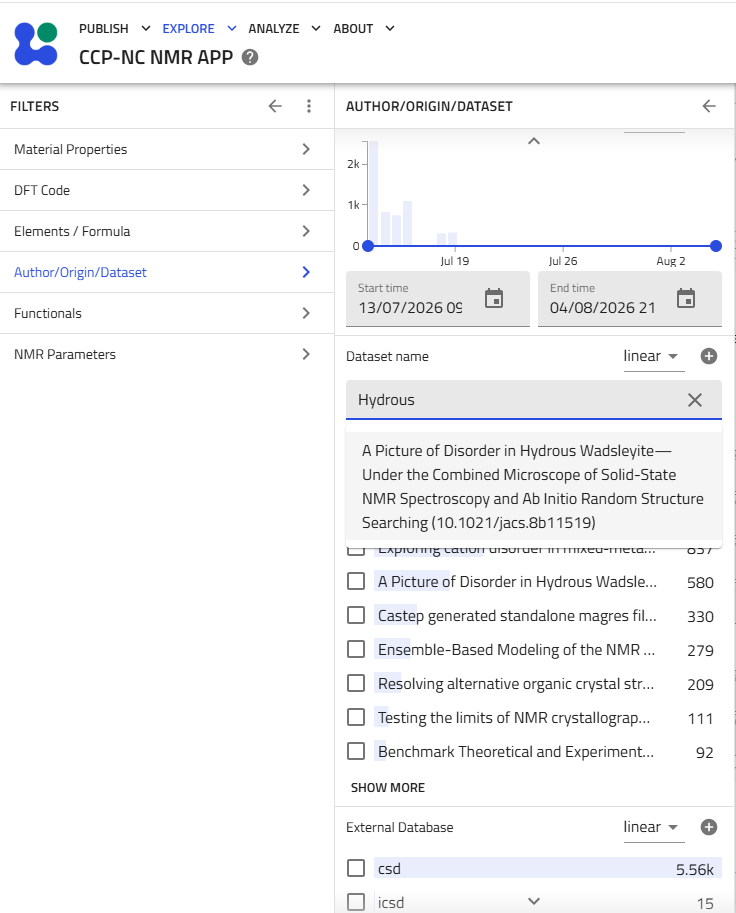
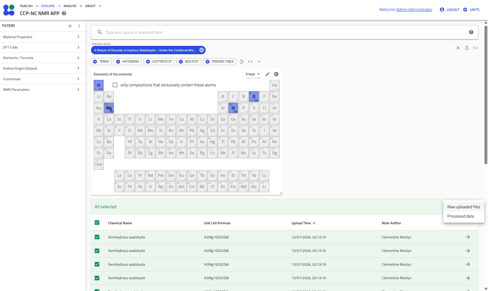
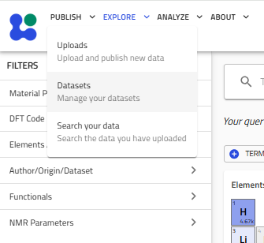
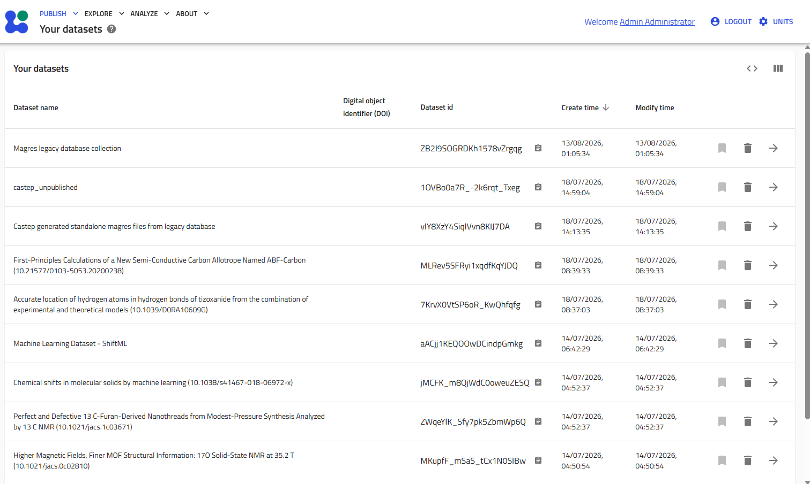
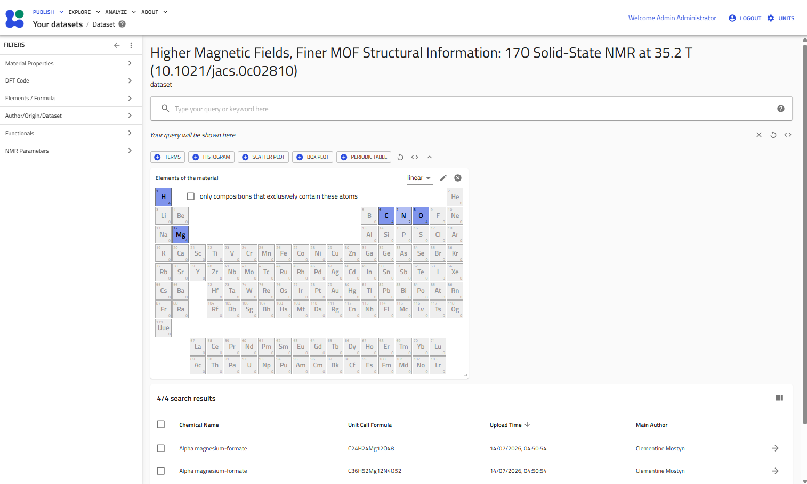
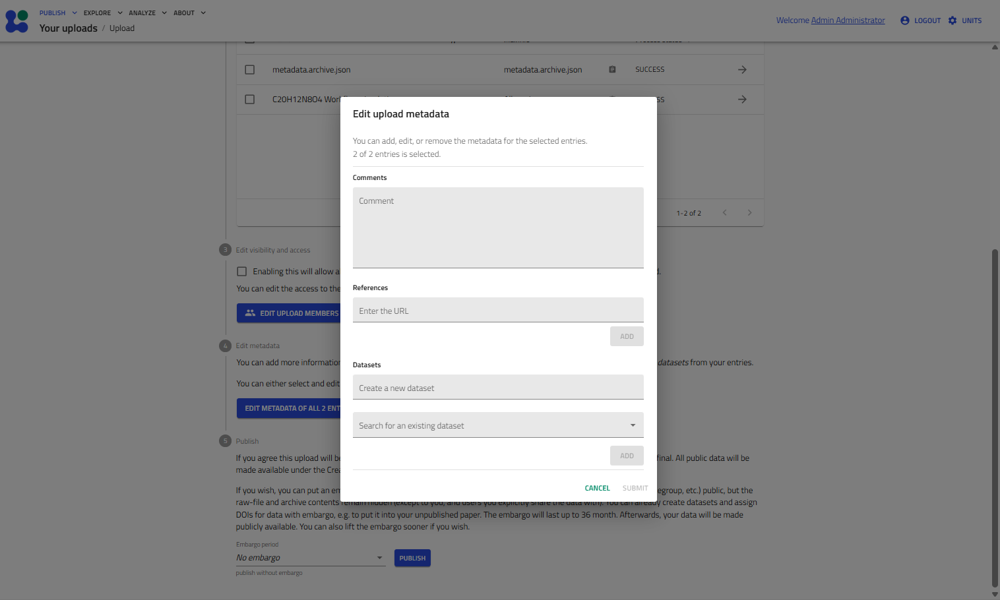

Datasets¶
Datasets provide a convenient way to organise and manage related MAGRES records, typically corresponding to a publication, project, or computational study. Records belonging to the same dataset can be searched, filtered, explored and downloaded together.
Searching datasets¶
Datasets can be searched directly from the Author/Origin/Dataset section of the filter panel.
Begin typing a dataset name into the Dataset name field. An autocomplete list of matching datasets will appear as you type. Selecting a dataset immediately filters the search results to records belonging to that dataset.
The remaining filter categories remain fully available, allowing the dataset contents to be narrowed further using:
- Material properties
- DFT code
- Elements and formula
- Functionals
- NMR parameters
- Any other supported metadata filters
For help on filtering using these fields, see the Searching the Database section. This allows users to locate specific subsets of records within a larger published dataset.

Exploring dataset contents¶
After selecting a dataset, the results table displays only records belonging to that dataset.
From this view you may:
- further refine the results using any available filters
- open individual record pages exactly as described in the Viewing Results section
- select multiple records using the checkboxes
- download the filtered results in bulk
Bulk downloading behaves identically to the standard search results page.
Click the Download button above the results table to choose between:
- Raw uploaded files — downloads the original uploaded files exactly as submitted.
- Processed data — downloads processed JSON representations that conform to the CCP-NC data schema.

Managing your datasets¶
Users can manage datasets that they have uploaded through the Publish menu.
Select:
Publish → Datasets
to display all datasets that you own.

The Your datasets page lists all datasets associated with your account together with their identifiers and creation dates.
Selecting a dataset opens the dataset exploration view.

Within an individual dataset you may:
- browse all records belonging to that dataset
- further filter records using the filter panel
- open individual record pages
- select records in bulk
- download filtered results exactly as described above
Note
Occasionally the browser may need to be refreshed after opening a dataset before the correct dataset contents are displayed.

Creating datasets during upload¶
Datasets are created during the upload workflow.
While preparing an upload, select Edit metadata and either:
- enter the name of a new dataset, or
- assign the uploaded records to an existing dataset.

We recommend using descriptive dataset names.
For datasets associated with published work, use the publication title followed by the DOI in brackets. This maintains consistency with the legacy CCP-NC datasets already present in the database.
Example:
Higher Magnetic Fields, Finer MOF Structural Information: 17O Solid-State NMR at 35.2 T (10.1021/jacs.0c02810)